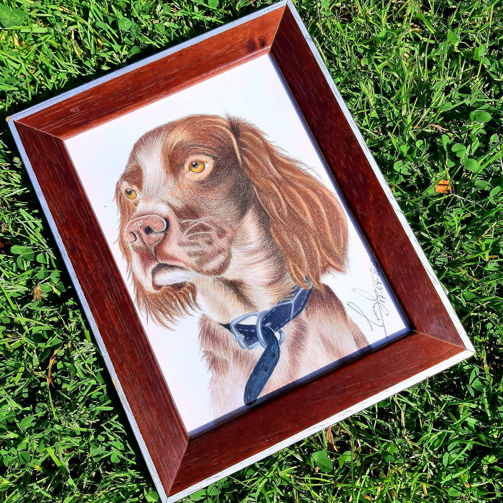

Materiales
Para crear un retrato al pastel de una mascota, es fundamental contar con los materiales adecuados: papeles de alta calidad como Canson Mi-Teintes o Pastelmat proporcionan la textura ideal; pasteles suaves y duros de marcas como Sennelier y Rembrandt permiten aplicar y mezclar colores de manera efectiva; lápices pastel de Faber-Castell y Stabilo Carbothello son perfectos para los detalles finos; esfuminos y dedos ayudan a suavizar y mezclar los colores; un fixativo específico para pasteles protegerá la obra final, y una goma de borrar maleable es ideal para crear efectos de luz y corregir errores.
